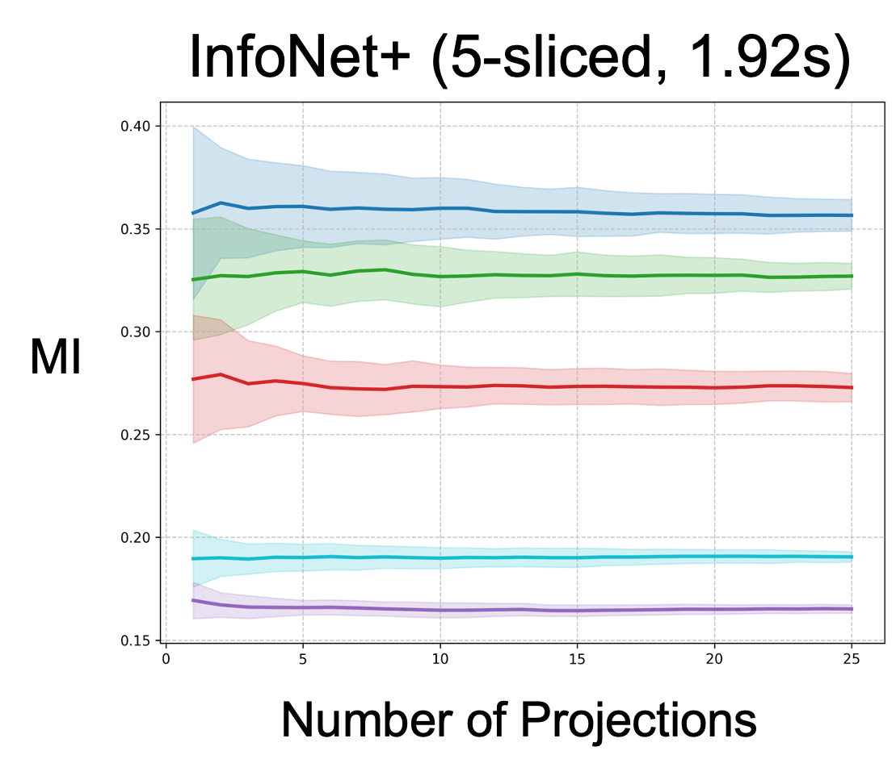
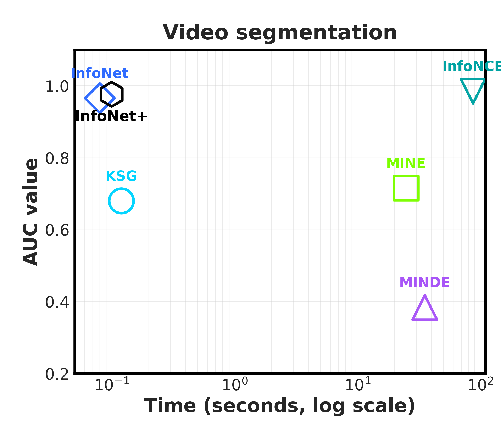
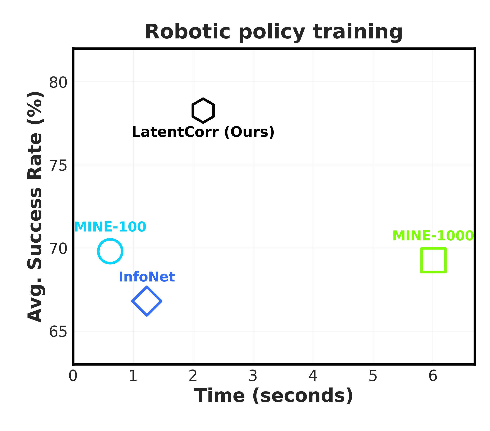

Need fast, accurate dependence estimation?
InfoAtlas is a pretrained model that, after one-time
training on a vast atlas of synthetic distributions, estimates the dependency
between any (x, y) pair in a single forward pass.
Samples in, dependence out — and it stays differentiable.
Neural mutual information (MI) estimators are accurate but slow: each new dataset triggers its own optimization run. InfoAtlas removes that step. Pretrained once on a large synthetic atlas of dependence structures, it infers MI in a single forward pass — matching state-of-the-art accuracy at ~100× the speed, on inputs of varying dimension and sample size, with strong zero-shot transfer to real data.
A dual-path attentive hypernetwork, pretrained on a synthetic atlas of dependence structures.

Given samples from an unknown joint distribution, InfoAtlas emits the parameters of a near-optimal Donsker–Varadhan critic in one shot and plugs them into the dual-form MI estimator.
A joint path attends over paired samples (x, y) to
capture co-variation. A marginal path shuffles the pairing to
model what independence would look like. The two are fused by
cross-attention; a small MLP then decodes the critic weights.
Inputs of any dimension are padded to a fixed size with independent Gaussian noise — a transformation that provably preserves MI. Attention handles varying sample sizes natively. For high-dimensional inputs beyond the trained range, we plug InfoAtlas into k-sliced MI [1]: the data is projected onto several k-dimensional random subspaces and the per-projection MI estimates are averaged — preserving the independence ⇔ zero-MI property with dimension-free sample complexity.
The shift: prior neural estimators optimize a critic per dataset. InfoAtlas infers it — minutes become milliseconds.
One checkpoint, no fine-tuning — from synthetic benchmarks to robotics. Click the arrows or use ← / →.





A single forward pass with one checkpoint — runtime and memory grow gently with sample size, with no training step in the loop.
| Sample size n | 1k | 5k | 10k | 20k | 50k |
|---|---|---|---|---|---|
| Time (s) | 0.039 | 0.049 | 0.055 | 0.070 | 0.106 |
| GPU memory (GB) | 0.21 | 0.55 | 0.98 | 1.81 | 4.33 |
[1] Goldfeld, Greenewald, Nuradha, Reeves. k-Sliced Mutual Information: A Quantitative Study of Scalability with Dimension. NeurIPS 2022.
The whole story on one page — see you in Seoul.
Please cite the ICML 2026 version.
@inproceedings{hu2026infoatlas,
title = {{InfoAtlas}: A Foundation-style Model for Zero-Shot
Statistical Dependency Measurement},
author = {Hu, Zhengyang and Chen, Yanzhi and Ren, Hanxiang and Zeng, Qunsong
and Zheng, Youyi and Weller, Adrian and Huang, Kaibin and Yang, Yanchao},
booktitle = {Proceedings of the 43rd International Conference on Machine Learning (ICML)},
year = {2026},
note = {Equal contribution: Zhengyang Hu and Yanzhi Chen.}
}